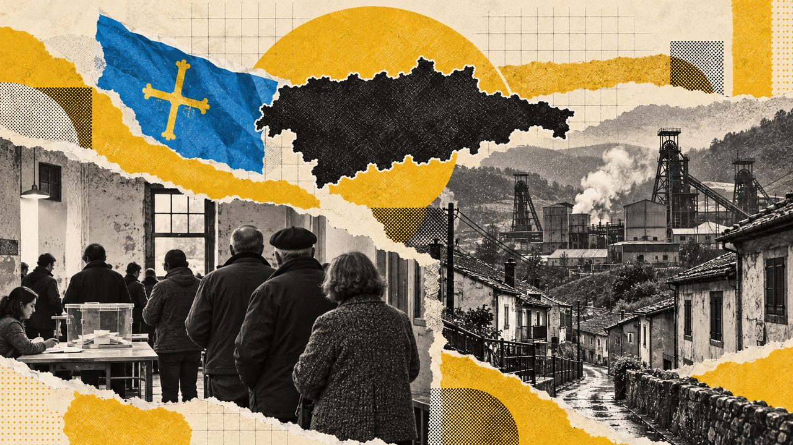

Actualidad · Las comunidades en las urnas · Asturias
El PSOE ha gobernado Asturias en diez de sus doce legislaturas; en las generales, el PP ganó allí en 2004 aunque España votó a Zapatero
Las dos excepciones al gobierno socialista, Sergio Marqués en 1995 y Álvarez-Cascos en 2011, acabaron en crisis. En las generales Asturias es más disputada: el PP ganó en siete de las dieciséis y Podemos sacó el 21,5% en 2015.
Por Nacho G. del Álamo ·

Asturias ha elegido doce veces su parlamento, la Junta General del Principado, y en diez de ellas el presidente salió del PSOE. Los socialistas fueron los más votados en todas las autonómicas menos una, la de 1995. Las dos excepciones a su gobierno duraron poco y acabaron en crisis: el popular Sergio Marqués terminó la legislatura de 1995 fuera de su partido, y Francisco Álvarez-Cascos, que había ganado en escaños con un partido fundado unos meses antes, disolvió la cámara a los seis meses de llegar al cargo.
En las generales, en cambio, Asturias es mucho menos fiel. El PP ganó allí en 1996, en 2000, en 2004, cuando España votó a Zapatero, de 2011 a 2016 y otra vez en 2023. Y en 2015 Podemos sacó el 21,5%, a dos puntos del PSOE.
Este reportaje recorre esa historia con los resultados de las doce elecciones autonómicas, de 1983 a 2023, y de las dieciséis generales desde 1977, concejo a concejo.
Diez de doce para el PSOE
El Estatuto de Autonomía de Asturias se aprobó el 30 de diciembre de 1981, y la primera Junta General se votó en mayo de 1983. El PSOE sacó el 52% de los votos y 26 de los 45 escaños; Pedro de Silva fue investido con los votos de su grupo. Solo hubo otra mayoría absoluta en estos cuarenta años, la de Vicente Álvarez Areces en 1999, con 24 diputados.
Ver los datos en tabla
El resto del tiempo, los socialistas gobernaron en minoría o con Izquierda Unida. En 1987, con 20 escaños, De Silva fue investido en segunda votación con solo los votos del PSOE: AP, el CDS y la coalición de IU se abstuvieron, según los registros de Historia Electoral. Hoy, además, el reglamento de la Junta General no permite votar en contra de un candidato: solo a favor o abstenerse, como recuerda Paloma Requejo en el Informe Comunidades Autónomas 2023.
Juan Luis Rodríguez Vigil, presidente desde 1991, dimitió en 1993 por el escándalo del «petromocho», según recoge Wikipedia, y Antonio Trevín terminó la legislatura. Areces gobernó doce años, de 1999 a 2011, y en su último mandato metió a Izquierda Unida en el Gobierno. Javier Fernández (2012-2019) y Adrián Barbón, presidente desde 2019, completaron la lista socialista.
| Presidente | Partido | Mandato |
|---|---|---|
| Rafael Fernández | PSOE | 1982–1983 |
| Pedro de Silva | PSOE | 1983–1991 |
| Juan Luis Rodríguez Vigil | PSOE | 1991–1993 |
| Antonio Trevín | PSOE | 1993–1995 |
| Sergio Marqués | PP, luego URAS | 1995–1999 |
| Vicente Álvarez Areces | PSOE | 1999–2011 |
| Francisco Álvarez-Cascos | Foro | 2011–2012 |
| Javier Fernández | PSOE | 2012–2019 |
| Adrián Barbón | PSOE | 2019–hoy |
Presidentes del Consejo de Gobierno del Principado desde el Estatuto de 1981. Rafael Fernández ya presidía el ente preautonómico desde 1978. Fuente: Historia Electoral.
Las dos excepciones
La primera llegó en 1995. El PP de Sergio Marqués sacó el 42% y 21 escaños, y fue el único año en que el PSOE no fue el más votado en unas autonómicas asturianas. La legislatura acabó rota: en noviembre de 1998 Marqués y otros cuatro diputados abandonaron el grupo popular y fundaron Unión Renovadora Asturiana (URAS). Marqués gobernó en minoría hasta el final y superó una moción de censura presentada por su antiguo partido, según la crónica de aquellas elecciones. En 1999, URAS sacó el 7% y tres escaños, y el PSOE volvió con mayoría absoluta.
La segunda fue todavía más corta. Francisco Álvarez-Cascos, exsecretario general del PP y exministro de Aznar, dejó el partido a finales de 2010 y fundó Foro Asturias. En mayo de 2011, Foro obtuvo 16 escaños con el 29,7% de los votos; el PSOE sacó algo más de votos, el 29,9%, pero un escaño menos. El jurista Leopoldo Tolivar Alas, de la Universidad de Oviedo, señalaba una coincidencia en aquel resultado:
«Curiosamente, Foro Asturias obtuvo 16 representantes; la suma exacta de los dejados por el camino por las dos grandes fuerzas estatales»
El PP había perdido 10 diputados y el PSOE, 6. Cascos fue investido el 15 de julio solo con los votos de su grupo, mientras el resto se abstenía, según la crónica de la investidura. Sin acuerdo con nadie, no consiguió aprobar los presupuestos de 2012 y a finales de enero disolvió la cámara. Culpó a PP y PSOE de una alianza para impedirle gobernar:
«no he venido aquí para volver, a la fuerza, al mismo sitio ni para ser cómplice pasivo de una trama para la que Asturias es su cortijo»
En las elecciones de marzo de 2012, el PSOE volvió a ser primero. El último escaño se decidió con el voto del extranjero: según la constitucionalista Paloma Requejo, de la Universidad de Oviedo, en el recuento inicial el PSOE tenía 16 escaños y Foro 13, y con los votos de los residentes ausentes un escaño de la circunscripción occidental pasó de Foro al PSOE. «Los verdaderos protagonistas fueron los votos desde el extranjero», escribió en su informe de aquel año. Foro lo recurrió y el Tribunal Constitucional acabó confirmando el reparto. Javier Fernández fue investido por mayoría absoluta.
2023: el PSOE gana, pero necesita a otros
Desde entonces el PSOE no ha dejado de gobernar. En 2015 la Junta se llenó de partidos nuevos, con Podemos en 9 escaños y Ciudadanos en 3. En 2023, Barbón ganó con 19 diputados, el PP subió de 10 a 17 y Vox, de 2 a 4. Requejo resumió así aquellas elecciones:
«triunfo del PSOE, aunque necesitando a otras fuerzas para asegurar la estabilidad del futuro Gobierno, fuerte avance de la derecha con gran subida de los Populares y desplome de Cs y de Podemos»
Barbón fue investido en primera votación con 23 votos, los de los socialistas, los tres de Convocatoria por Asturias (IU, Más País e IAS) y la diputada de Podemos. Después firmó un gobierno de coalición con Convocatoria, la fórmula que ya había probado Areces. Las próximas autonómicas tocan en mayo de 2027.
En las generales: un país más disputado
En las generales, el mapa asturiano cambia más. En 1977 y 1979 el PSOE ganó en Asturias cuando en España ganaba UCD, con el voto de la zona central, minera e industrial, como se ve en el mapa de más abajo. Desde los noventa, la comunidad se ha movido más o menos con el país, con una excepción: en 2004 el PP fue el más votado en Asturias por siete décimas (44,8% frente a 44,1%) mientras Zapatero ganaba en España.
Ver los datos en tabla
La izquierda a la izquierda del PSOE siempre ha sido fuerte aquí. El PCE sacó el 13,8% en 1979, IU pasó del 15% en las generales de 1989 a 1996, y en diciembre de 2015 Podemos sacó el 21,5% e IU, el 8,5%; en el gráfico, la línea de PCE / IU / Podemos / Sumar suma las dos listas. Ese año Podemos fue la lista más votada en Mieres y en Carreño.
Ver los datos en tabla
Ver los datos en tabla
Las ciudades no votan igual. Oviedo, la capital, se pasó al PP en 1989 y desde entonces solo ha votado al PSOE en las dos generales de 2019. Gijón, con más electores, ha votado al PSOE en la mayoría de elecciones. En las cuencas mineras, Langreo, Mieres y San Martín del Rey Aurelio, solo ha ganado otra lista que no fuera el PSOE de forma puntual, sobre todo Podemos en Mieres en 2015 y Unidos Podemos en Langreo y Mieres en 2016.
Ver los datos en tabla
El mapa por concejos enseña de dónde sale cada voto. En 1977, UCD ganó en 47 concejos, casi todo el occidente y el oriente, y el PSOE en 26, los de la zona central: Gijón, Avilés y las cuencas mineras. En 1996 y en 2004, los dos años en que el PP ganó en Asturias con poca ventaja, el PSOE siguió siendo el más votado en más concejos (56 frente a 22, y 44 frente a 34). En 2015, Podemos solo ganó en dos concejos, Mieres y Carreño; el PP fue el más votado en 45, entre ellos Gijón, Avilés y Siero, y el PSOE, en 31, como Langreo y San Martín del Rey Aurelio. Y en 2023 el reparto quedó casi empatado: 40 concejos para el PSOE y 38 para el PP.
Solo tres de los 78 concejos han votado al mismo partido en las 16 generales: Ribera de Arriba, Quirós y Sobrescobio, los tres al PSOE.
Votar menos que la media
Asturias vota algo menos que el conjunto de España en las generales. Sin contar el voto exterior, su participación quedó por debajo de la media en 15 de las 16 elecciones. La excepción fue 2023, con el 71,1% frente al 70,4%.
Ver los datos en tabla
Qué mirar el 29N
Asturias elige 7 diputados en una sola circunscripción. En 2023 fueron 3 para el PP, 2 para el PSOE y 1 para Sumar y Vox. El 29 de noviembre dirá si el PP repite como lista más votada, como en 2023, o si el PSOE, que gobierna el Principado desde 2012, vuelve a ser el más votado en unas generales.
Método y fuentes
- Qué se compara
- Las 12 elecciones a la Junta General del Principado (1983-2023) y las 16 generales (1977-2023) en Asturias, por concejo.
- Límites
- Las generales se cuentan sin voto exterior (CERA), así que la participación sale algo por encima de la oficial. Hasta 2000 el ganador de cada provincia y municipio es la candidatura más votada de todas; desde 2004, la familia de partidos más votada (los regionalistas van en «Otras listas»). La familia PCE / IU / Podemos / Sumar suma listas que en 2015 y 2019 se presentaron por separado en algunas comunidades (Podemos, IU, Compromís, Más País): en el gráfico de voto su línea es la suma, pero el ganador de cada provincia, ciudad y municipio de esos años se ha calculado lista a lista con los datos por mesa de Interior (vía pollspaindata). En 1982 faltan en el fichero de Interior unos 139 municipios de toda España. Los escaños autonómicos son los de Historia Electoral, comprobados con Wikipedia en las elecciones que se citan en el texto.
- Cómo se calcula
- Porcentajes sobre votos a candidaturas, salvo la participación, que es sobre el censo. Cifras reproducibles con los scripts del expediente de la pieza. Metodología del Atlas
- Fuentes
- Ministerio del Interior (Infoelectoral), resultados de las elecciones generales desde 1977 por municipio y por mesa; de 1986 a 2003, vía pollspaindata. Sin voto exterior (CERA)
- pollspaindata (datos de Interior por mesa): votos de cada candidatura en las generales de 2015, 2019 y 2023, para el ganador lista a lista
- Historia Electoral, elecciones autonómicas en Asturias (escaños, votos e investiduras)
- Leopoldo Tolivar Alas, «Asturias», Informe Comunidades Autónomas 2011, Instituto de Derecho Público (IDP Barcelona)
- Paloma Requejo Rodríguez, «Asturias», Informe Comunidades Autónomas 2012, IDP Barcelona
- Paloma Requejo Rodríguez, «Asturias», Informe Comunidades Autónomas 2023, IDP Barcelona
- Público, «Cascos convoca elecciones en Asturias tras sólo seis meses en el Gobierno» (30-1-2012)
- Wikipedia, Elecciones a la Junta General del Principado de Asturias de 1995
- Wikipedia, Elecciones a la Junta General del Principado de Asturias de 2011
- Autoría
- Nacho G. del Álamo
- Revisión de datos y texto
- Nacho G. del Álamo, 9 de octubre de 2026
- Publicado · actualizado
- 9 de octubre de 2026 · 9 de octubre de 2026
- Correcciones
- Ninguna.
Serie «Las comunidades en las urnas»: 19 piezas
- El PSOE gobernó Andalucía 36 años seguidos; desde 2019 la Junta es del PP, que ahora gobierna con Vox dentro
- Huesca y Zaragoza han votado al ganador de España en las 16 generales; en sus Cortes nadie ha tenido nunca mayoría absoluta
- Estás aquíEl PSOE ha gobernado Asturias en diez de sus doce legislaturas; en las generales, el PP ganó allí en 2004 aunque España votó a Zapatero
- El PP ha ganado diez de las once autonómicas en Baleares, pero entre 1999 y 2015 el Govern cambió de manos en cada elección
- El PSOE ha ganado siete de las once autonómicas canarias, pero solo ha gobernado tres legislaturas
- El PP ha ganado nueve de las once autonómicas en Cantabria, pero Revilla, del PRC, la presidió dieciséis años
- El PSOE ha gobernado Castilla-La Mancha en diez de sus once legislaturas; en las generales, el PP ganó allí incluso en 2004 y 2008, con Zapatero
- El PP gobierna Castilla y León desde 1987 y ha ganado allí 11 de las 16 generales; el PSOE ganó las autonómicas de 2019 y no gobernó
- El PSC ha sido el más votado en Cataluña en 11 de las 16 generales; la Generalitat la presidió CiU 23 años seguidos
- La Comunitat Valenciana votó al PP en las generales de 1993, 2004 y 2008, cuando España eligió al PSOE; en la Generalitat, el PP gobernó 20 años seguidos
- El PSOE ha ganado 11 de las 16 generales en Extremadura y gobernó la Junta nueve legislaturas; en 2025 cayó al 25,8%
- El PP ha ganado las doce elecciones gallegas y solo perdió la Xunta dos veces; en las generales, el PSOE ganó allí una sola vez, en 2019
- El PP gobierna Madrid desde 1995, también tras perder en 2019; Ayuso pasó de 30 a 70 escaños en cuatro años
- Murcia es la única provincia donde Vox ha ganado unas generales; el PP la gobierna desde 1995 y ahora depende de Vox
- UPN ha sido la lista más votada en las nueve últimas elecciones navarras, pero desde 2015 gobiernan otros
- El PNV ha sido el más votado en las trece elecciones vascas; en las generales perdió el primer puesto cinco veces, ante el PSE y Podemos
- La Rioja ha votado más que la media de España en las 16 generales, y el PP la gobernó 24 años seguidos
- Ceuta es uno de los dos sitios donde Vox ha ganado unas generales; en su Asamblea, Vivas gobierna desde 2001 tras dos mociones de censura
- Melilla tuvo cuatro años un presidente con un solo escaño de 25; en las generales vota al PP desde 1996 y en 2019 rozó el cambio
Sigue leyendo
- Camino al 29N · EspañaVox saca casi lo mismo donde uno de cada tres vecinos nació fuera que donde casi nadie lo hizo
- Camino al 29N · EspañaEl espacio a la izquierda del PSOE fue el más votado en 9.810 secciones en 2015; en 2023, en 182
- Camino al 29N · MadridEn Madrid, el PSOE saca diez puntos más cuando se vota al Gobierno que cuando se vota al alcalde
- ActualidadTodas las piezas de actualidad
- AtlasAtlas de las anomalías electorales